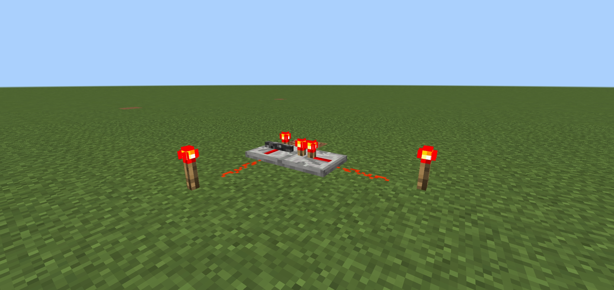
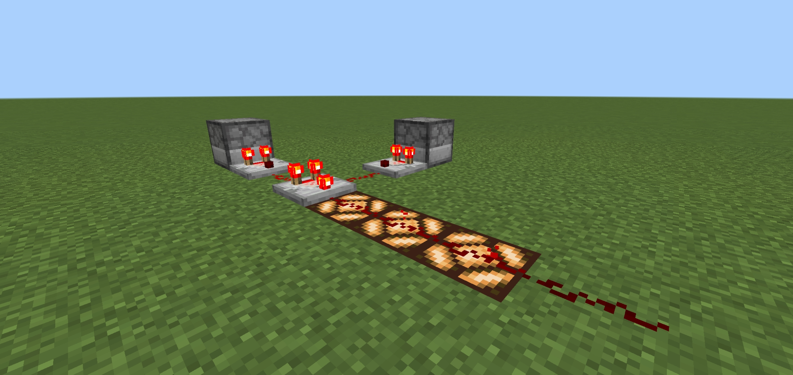
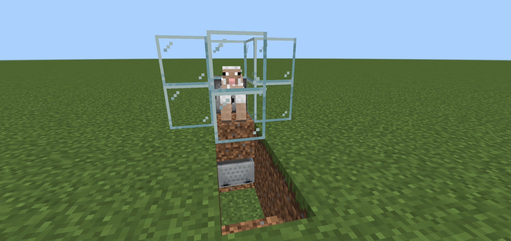
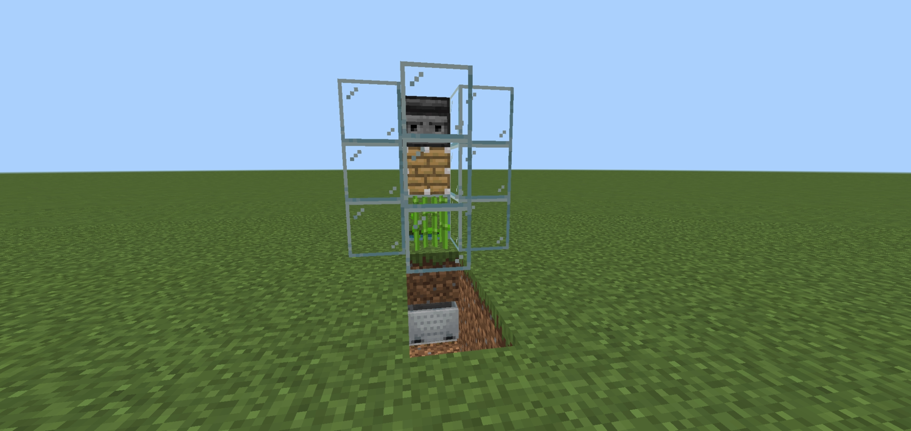

Redstone dust is used in most redstone machines and redstone component recipes.
Redstone dust carries redstone signal, powering blocks it is laid on and any blocks its running into.
Redstone torches can power all surrounding blocks, excluding the one it is placed on.
Redstone torches also can be turned off by powering the block the torch is placed on.
The repeater has three specific functions that are highly important to machines.
The first function being restoring a redstone line back to a power level of 15 (15 is the maximum power level in redstone).
The second function is to delay a redstone signal, having 4 different delay settings.
The third function is very rarely used, locking in a redstone signal. You can make a repeater lock either on or off by running another powered repeater into the first.
The comparator is very strange in its functions.
The first function is compare mode.
Compare mode is used to make a redstone signal, based proportionally on the amount of storage space used in a container (For example, a chest, dispenser, or barrel).
The second function is subtract mode.
Subtract mode takes a redstone input from the side, and subtracts it from the input from the back. You know the comparator is in subtract mode when the front torch is lit.
Redstone blocks are very simple. Their only function it serves is powering all surrounding blocks.
A wool farm is a very simple farm to make, giving an infinite amount of wool.
When a sheep eats the grass its standing on, the observer detects that change. When it sees the change it powers the block behind it, powering the redstone dust. Which activates the dispenser, shearing the sheep. Once the sheep is sheared, it gets pulled into the hopper minecart, and will wait there until you take it out.
A sugarcane farm is a very simple farm to make, giving an infinite amount of sugarcane.
When the sugarcane grows in front of the observer, it detects the sugarcane, activating the piston, breaking the sugarcane. Once its broken, it drops down, and pulled into the minecart, waiting to be harvested.
